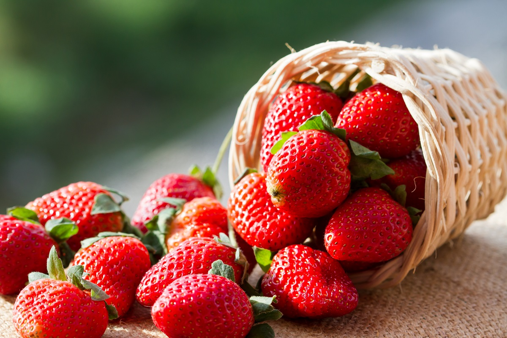
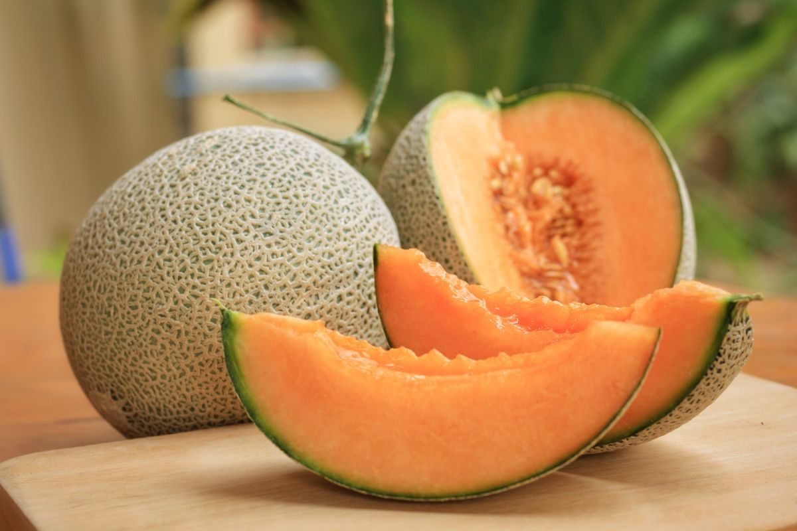

Le nostre offerte estive!!!

Acquista 8,0€/Kg
Fragole
Le fragole sono il frutto - più correttamente il falso
frutto o conocarpo in termini botanici - di piante appartenenti alla famiglia delle
Rosaceae e al Genere Fragaria. La Specie di fragole più diffusa è la Fragaria x
ananassa o fragola da orto/giardino, ottenuta dall'incrocio tra la Fragaria
virginiana nord americana e la Fragaria chiloensis o cilena.
Le varie sottospecie e varietà di fragole coltivate variano l'una dall'altra per:
dimensioni del frutto, colore, sapore, forma, grado di fertilità, stagione di
maturazione, resistenza alle malattie e costituzione della pianta. Nella maggior
parte delle fragole i fiori appaiono ermafroditi, ma la loro funzione è solamente
maschile o femminile, mai entrambe.
| Fragole, valori per 100g | |
|---|---|
| Energia | 27kcal |
| Fibre | 1,6g |
| Carboidrati | 5,3g |
| Grassi | 0,4g |
| Proteine | 0,9g |
| Acqua | 90,5g |
Acquista 8,0€/Kg

Acquista 3,50€/kg
Melone
In base al contesto in cui si utilizza il termine, il melone
è riferito sia alla pianta che al frutto; conosciuto per le dimensioni imponenti, il
colore arancio, il gusto dolcissimo e la freschezza, il melone, insieme all'anguria,
è diventato l'emblema dell'estate.
È doverosa anzitutto una prima distinzione dei meloni, in funzione del consumo
alimentare: esistono i meloni “frutto” ed i meloni “ortaggio”.
Chiaramente, i meloni intesi come frutto sono i più noti, dolci, tipicamente estivi
e raccolti a piena maturazione: in questa categoria, a sua volta, si distinguono
meloni reticolati (o retati, dalla polpa bianca o giallastra), di tipo inodorus
(melone d'inverno, dalla polpa bianca o rosata e buccia liscia) e meloni cantalupo
(con pericarpo liscio e polpa tipicamente arancione).
| Melone, valori per 100g | |
|---|---|
| Energia | 35kcal |
| Fibre | 3,80g |
| Carboidrati | 8,80g |
| Grassi | 0,10g |
| Proteine | 0,30g |
| Acqua | 87,40g |
Acquista 3,50€/kg

Ciliege
Le ciliegie sono il frutto, o meglio la drupa, di alcune
specie botaniche del genere Prunus, soprattutto Prunus avium L. (ciliegio selvatico)
e Prunus cerasus L. (amareno o amarasco), appartenenti alla famiglia delle Rosaceae.
Le ciliegie sono frutti propriamente detti ed il loro consumo va contestualizzato in
quanto tali; vantano un apporto energetico medio e prevalentemente costituito da
zuccheri semplici, mentre l'apporto di vitamine e sali minerali privilegia
soprattutto la vit. C (acido ascorbico), i retinolo equivalenti (pro-vitamina A -
β-carotene) ed il potassio (K). Il colore rosso delle ciliegie è dovuto al contenuto
in cianine.
A causa del costo elevato, in genere, le ciliegie non si prestano a soddisfare del
tutto la richiesta di frutta nella dieta ma, per chi ne avesse la possibilità, le
porzioni medie ricalcano esattamente quelle consigliabili per il resto dei prodotti
analoghi nazionali: circa 2 porzioni al giorno (da 1 a 3) da circa 200g l'una (da
150 a 300g).
| Ciliege, valori per 100g | |
|---|---|
| Energia | 38kcal |
| Fibre | 1,3g |
| Carboidrati | 9,0g |
| Grassi | 0,1g |
| Proteine | 0,8g |
| Acqua | 86,2g |
Acquista 8,68€/kg